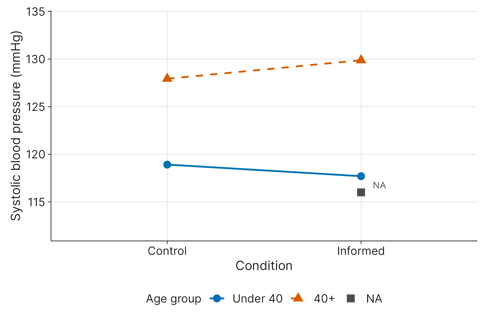

7 Advanced Experimental Designs
7.1 Introduction
In 2007, researchers at Harvard University asked an intriguing question: Can your mindset alone change your objective physical health? To find out, they designed a psychological experiment involving 75 female hotel maids (Crum & Langer, 2007).
Hotel room attendants experience high levels of physical exertion every day, but because it is their job, many do not perceive their labor as actual “exercise.” The researchers randomly split the maids into two groups. The “informed” group was explicitly told that their daily workplace routines satisfied the U.S. Surgeon General’s recommendations for an active lifestyle, and they were shown exactly how vacuuming and scrubbing translated into rigorous exercise. The “uninformed” control group received no such information. The researchers did not ask the maids to change their diets or join a gym; they simply changed how the maids thought about the work they were already doing.
To evaluate whether this intervention worked, the researchers collected physiological markers at the beginning of the study and again four weeks later. We will be using a subset of this data, maid_mindset.csv, throughout this chapter.
Cond: A categorical variable indicating the experimental condition (\(1\) = informed group, \(0\) = uninformed control group).Age: A numerical variable representing the participant’s age in years.Syst: A numerical variable recording the participant’s baseline systolic blood pressure at the start of the study, measured in mmHg.Syst2: A numerical variable recording the participant’s systolic blood pressure at the conclusion of the study four weeks later.BMI: A numerical variable representing the participant’s baseline Body Mass Index.BMI2: A numerical variable representing the participant’s Body Mass Index four weeks later.
We know from Chapter 6 that a standard One-Way ANOVA is a great tool for comparing groups. But human bodies are noisy data sources. A person’s post-intervention blood pressure is heavily influenced by their age, their genetics, and their baseline resting health, not just our psychological intervention. If we run a basic One-Way ANOVA, all of that natural, pre-existing human variation gets dumped directly into our “within-groups variation” bucket. As we learned previously, that within-groups variation acts as our statistical noise. If the background noise is too loud, we will never be able to hear the signal of our intervention.
In this chapter, you will learn how to use advanced experimental designs to strategically filter out that noise. By the end of this chapter, you will understand how to categorize participants to control for nuisance variables, how to use continuous baseline measurements to mathematically level the playing field, and how to measure participants against themselves to maximize your statistical power to observe real effects in your experiments.
7.2 The Evolution of Experimental Design
Before we introduce our new methods, let’s take a moment to survey the big picture. In Chapter 6, you learned that a standard ANOVA works by a process called partitioning variation. It takes all the chaotic differences in your dataset and splits them into two specific buckets: the signal and the noise.
The signal is the between-groups variation. This represents the differences in the response variable that are directly caused by your experimental treatment, like the shift in blood pressure caused by our mindset intervention. The noise is the within-groups variation. This is a catch-all bucket that holds every single difference your model cannot explain. It includes the natural, pre-existing differences among individuals inside the same treatment group, such as their age, baseline fitness, genetics, and daily stress levels.
When human bodies are involved, that noise bucket fills up fast. If the background noise becomes too loud, it will drown out the signal of your intervention. You might look at your data, see a high \(p\)-value, and falsely conclude that the intervention failed. As you learned in Chapter 3, this is a Type II error, and missing a real, impactful discovery is a major setback in research. The advanced designs in this chapter share one common goal: they allow you to scoop specific, known variation out of the “noise” bucket and give it a proper label. By identifying and controlling the noise, we make our primary signal much easier to detect. Here is how we will do it:
The Two-Way ANOVA
What if we know that a categorical variable, like age brackets, is causing a large share of that background noise? A Two-Way ANOVA allows us to pull that second categorical factor out of the noise bucket and measure it directly. By organizing our participants into distinct blocks (such as comparing only the under-40 maids to other under-40 maids), we ensure we are comparing apples to apples. This shrinks the unexplained noise and lets us see whether the intervention works differently for different types of people.
The ANCOVA (Analysis of Covariance)
But what if our nuisance variable isn’t a category, but a precise continuous number, like exact baseline blood pressure? Chopping exact numbers into arbitrary categories destroys valuable information. An ANCOVA solves this by mathematically blending the grouping power of an ANOVA with the continuous tracking of a multiple regression model. It uses that continuous baseline score to artificially level the playing field, mathematically calculating what the treatment group averages would look like if every single participant had started the study with the same blood pressure.
Finally, what if the biggest source of noise is simply the large, uncontrollable biological differences between human beings? The ultimate way to control for human variation is to stop comparing different people to each other. A Repeated Measures ANOVA fixes this by treating every individual participant as their own baseline. By measuring the same person before and after the intervention, we filter out their pre-existing biological noise. This gives researchers substantial statistical power to detect true changes, even with small sample sizes, an ethical advantage when asking human subjects to participate in a study.
7.3 The Two-Way ANOVA: Expanding the Model
In Chapter 6, we used a One-Way ANOVA to evaluate our data. It is called “one-way” because it tests the effect of just one categorical grouping variable at a time. But human biology and behavior are rarely that simple. What if we want to study two grouping variables at the same time? That is exactly what a Two-Way ANOVA does.
Let’s think about the design of our hotel maid study. We want to know if the mindset intervention (Cond) lowered the maids’ post-intervention systolic blood pressure (Syst2). However, basic biology tells us that age also has a large impact on blood pressure. If we ignore age, the natural blood pressure difference between a 22-year-old and a 60-year-old gets dumped straight into our statistical noise bucket. This background noise makes the true signal of our psychological intervention much harder to detect.
To fix this, researchers use a technique called blocking. Blocking takes a known background issue (often called a nuisance variable) and converts it into specific categorical groups. For example, we can split our maids into two distinct age blocks: those under 40, and those 40 and older. We will call this new variable Age_Group.
By adding this second factor to our model, we pull age out of the noise bucket. Our model can now compare younger maids in the informed group directly against younger maids in the control group. Blocking ensures we are finally comparing apples to apples.
When a study categorizes participants using two or more factors at the same time, we call it a factorial design. In a factorial design, you cross your categories to examine every possible combination. For our maids, we have two conditions (Informed vs. Control) and two age blocks (Under 40 vs. 40 and older). This creates four unique, overlapping subgroups of participants to compare.
Because we now have two factors interacting in our model, a Two-Way ANOVA gives us two different types of results to interpret:
- Main Effects: A main effect is the independent, isolated impact of just one variable, temporarily pretending the other variable does not exist. For example, if we ignore their age, did the informed maids have lower blood pressure than the control maids? That is the main effect of the experimental condition.
- Interaction Effects: Human traits rarely exist in a vacuum. An interaction effect occurs when the impact of one variable depends on the value of the other variable. What if the psychological intervention worked beautifully to lower blood pressure for the younger maids, but had absolutely no effect on the older maids? You cannot see that nuance if you only look at the main effects. You need to measure how the two variables mix.
Here is the main warning for factorial designs: if an interaction effect exists, it changes how you interpret your main effects. In fact, a strong interaction can make a main effect misleading.
Imagine if our mindset intervention was wildly successful for the younger maids, dropping their blood pressure by an average of 10 points. However, imagine the older maids felt stressed by the intervention, and their blood pressure actually increased by 10 points. What happens if we ignore age and only analyze the main effect of the intervention? The 10-point drop and the 10-point increase average out to zero.
If you relied only on the main effect, you would mistakenly conclude that the intervention did absolutely nothing. In reality, the intervention did a lot; it just acted differently depending on the participant’s age. Because of this, researchers follow a strict rule: if a significant interaction exists, you can rarely trust the main effects on their own. The answer to “did the intervention work?” becomes “it depends on their age.”
Because interactions complicate our interpretations, you might be wondering what happens if we add even more variables. What if we also categorized the maids by whether they work the day shift or the night shift?
Adding a third factor creates a Three-Way ANOVA. While software can easily calculate this, it is a serious struggle to interpret it. A Three-Way ANOVA generates three separate main effects, three separate two-way interactions, and one three-way interaction. To interpret a three-way interaction, you have to answer a dizzying question: Does the interaction between age and mindset change depending on the shift the maid is working?
This level of complexity is usually a nightmare to untangle and explain to an audience. To avoid this, statisticians rely on a concept called parsimony. Parsimony is the principle that the simplest model that accurately explains the data is usually the best one. While you can technically build a model with four, five, or six categorical factors, you should only include variables that you strongly suspect will clarify the noise. In statistics, keeping things simple is a virtue.
7.4 Two-Way ANOVA: Visualizing and Understanding Interactions
When we run a Two-Way ANOVA, the very first thing we want to do is look at a picture of our data. Our brains are much better at spotting patterns in shapes than in tables of numbers. To do this, we use a specific graph called an interaction plot.
An interaction plot maps out the averages for every possible combination of our subgroups. The horizontal x-axis usually shows the main experimental treatment (like our informed versus control groups). The vertical y-axis shows our numerical response variable (post-intervention systolic blood pressure). Finally, we draw separate, color-coded lines for each of our blocks (our age groups).
Here is how to read an interaction plot: look at the lines. If the lines are perfectly parallel, there is no interaction. The treatment does the same thing to everyone, regardless of their block. If the lines are not parallel (if they converge, diverge, or cross), an interaction is happening.

Let’s view the interaction plot for our hotel maids. First, follow the line for the “Under 40” age group. Notice that their average blood pressure is lower in the informed condition than in the control condition. For the younger maids, the mindset intervention worked exactly as the researchers hoped!
Now, look at the line for the “40+” age group. Their line actually goes in the opposite direction. For the older maids, being in the informed group resulted in a higher average blood pressure than being in the control group. Why might this happen? Perhaps suddenly being told that their daily labor was a rigorous, Surgeon General-approved workout caused unexpected anxiety or stress for the older participants.
Notice that the lines for our two age groups do not physically cross on the graph. Because the older maids started out with a higher baseline blood pressure across the board, their line hovers safely above the younger maids’ line. However, crossing lines are not required for an interaction. Because one line points up and the other points down, they are not parallel. This diverging behavior is the visual hallmark of an interaction effect. The intervention’s success heavily depends on the participant’s age.
When you look at Figure 7.1, you will notice a third element floating on the plot labeled “NA.” This stands for “Not Available.” One maid is missing her age, so she does not belong to either age block. Her post-intervention blood pressure is still known (116 mmHg), so she appears as a single point in the informed condition. Separately, 9 maids are missing their post-intervention systolic blood pressure, so they cannot appear on this plot at all.
When researchers see missing values disrupting their clean age categories, the immediate temptation is to delete the affected participants so the graph looks perfect. However, throwing away data is a dangerous habit. The 9 maids without a final blood pressure reading still have other valid readings, like weight and baseline BMI, that can be used in other parts of the analysis. The maid without an age still has a final blood pressure reading, and deleting her would remove a real observation from the condition comparison.
Real data is messy. People skip survey questions, leave fields blank, and forget to write things down. Learning to leave missing data intact instead of hiding it to make a chart look prettier is a core part of ethical research.
7.5 Two-Way ANOVA: Assumptions and Output Interpretation
Before we can trust the results of a Two-Way ANOVA, we must ensure our data fits the tool. The required assumptions are the same as the One-Way ANOVA you learned in Chapter 6: independent samples, mutually exclusive groups, normality of residuals, and equal variances.
However, there is one structural difference that matters here. In a Two-Way ANOVA, we check these assumptions at the cell level. A cell is a specific, unique subgroup created by crossing your two factors. In our maid_mindset.csv dataset, we have four cells:
- Under 40 / Control
- Under 40 / Informed
- 40+ / Control
- 40+ / Informed
When checking for equal variances, we generate a jitter dot plot and compare the vertical spread across all four of these distinct cells, ensuring the largest spread is no more than double the smallest. When checking for normality, we generate a single probability plot (or Q-Q plot) of the model’s pooled residuals, just as we did previously. Remember our rule from Chapter 6: avoid running formal statistical tests to check these assumptions. Rely on your visual plots and your intuition.
7.5.1 The Stop Sign
Once your diagnostic plots look safe, you can run the Two-Way ANOVA and read the output table. Statistical software will generate an Analysis of Variance table that provides Degrees of Freedom, \(F\)-statistics, and \(p\)-values for three distinct things: the main effect of your first factor, the main effect of your second factor, and the interaction effect between them.
When you interpret this table, you must follow one rule: always check the interaction \(p\)-value first. Treat it like a stop sign.
Why? Because if the interaction is statistically significant (if its \(p\)-value is less than our \(\alpha = 0.05\) threshold), the main effects are fundamentally compromised. As we discussed in Section 7.3, a strong interaction means the treatment acts differently depending on the subgroup. If you try to interpret a main effect while a significant interaction is happening, you are reporting a deceptive, watered-down average.
7.5.2 Interpreting the Output
Let’s review the output generated for our hotel maids. To see a mix of statistical results, we will use the model predicting their baseline systolic blood pressure (Syst).
| Source | df | F-statistic | p-value |
|---|---|---|---|
| Cond (Condition) | 1 | 1.81 | 0.184 |
| Age_Group | 1 | 6.04 | 0.017 |
| Cond * Age_Group (Interaction) | 1 | 0.05 | 0.829 |
| Residuals (Error) | 61 |
Following that rule, we stop and look entirely at the interaction row (Cond * Age_Group) first. The \(p\)-value is \(0.829\).
This is a useful lesson in why we never rely only on a graph. In the previous section, we examined the interaction plot and saw the lines pointing in different directions. However, a \(p\)-value of \(0.829\) is nowhere near our \(0.05\) standard of evidence. The math tells us that the visual divergence we saw was just random background noise. We do not have sufficient evidence to claim that an interaction exists.
Table 7.1 models baseline blood pressure, while Figure 7.1 plots post-intervention blood pressure. The post-intervention model gives an interaction \(p\)-value of \(0.771\), also far from \(0.05\), so the visual divergence is consistent with noise either way.
Because the interaction is not statistically significant, the stop sign turns green. We are now mathematically allowed to interpret the main effects:
- Main Effect of Condition (
Cond): The \(p\)-value is \(0.184\). When controlling for age blocks, the experimental condition does not have a statistically significant effect. (This makes perfect logical sense here, as we are analyzing baseline blood pressure measured before the psychological intervention even started!) - Main Effect of Age (
Age_Group): The \(p\)-value is \(0.017\). This is well below our threshold! This tells us that age has a statistically significant main effect on blood pressure.
This output demonstrates why we use a Two-Way ANOVA. By chopping the maids into age blocks, we successfully identified a major source of variation. We scooped that age-related variance out of the catch-all noise bucket and proved that it genuinely impacts blood pressure.
However, chopping a precise number like age into broad, arbitrary categories (like “Under 40” and “40+”) is not always the best strategy. In the next section, we will explore a method that allows us to control for background noise without throwing away our exact numbers.
A Practical Warning: When Assumptions Fail
If you were to generate a probability plot of the residuals for this model, you would see a distinct curve rather than a straight line. The baseline blood pressure data for our older maids is skewed.
In published academic research, you cannot simply ignore a failed assumption. Because the normality of our residuals is suspect, the \(p\)-values we just calculated are also suspect. If the foundation of a house is cracked, you cannot trust the walls.
So, what do researchers do when their data refuses to cooperate? Often, they reach for a tool you learned back in Chapter 4: data transformation. By applying a logarithmic transformation to the blood pressure variable, researchers can pull the right-skewed data closer to a normal bell curve. Once the transformed data passes the diagnostic checks, they can safely run the Two-Way ANOVA. For now, simply recognize that real data is messy, and checking your assumptions is what keeps your science honest.
7.6 The ANCOVA: Introducing Continuous Covariates
Let’s take a step back and consider what the researchers are trying to achieve. In our hotel maid study, the primary research interest is not age. The Harvard psychologists did not run this experiment to prove that older people have different blood pressure than younger people; that is already a well-known biological fact. Their true goal is to find out if the mindset intervention (Cond) significantly changed the maids’ physical health.
In this context, a factor like age or baseline blood pressure is what researchers call a nuisance variable. It is a background factor that affects the outcome, but it is not the main focus of the study. If we do not account for it, it acts as a thick fog that obscures the true effect of our psychological intervention. We want to isolate the effect of the intervention from the nuisance.
In the previous sections, we tried to clear that fog using a Two-Way ANOVA. We controlled for the nuisance of age by chopping the maids into two distinct blocks: “Under 40” and “40+.” While this successfully identified age as a source of noise, blocking is a blunt instrument with a major mathematical flaw.
Imagine two maids in our “Under 40” block: one is 21 years old, and the other is 39 years old. Biologically, their resting cardiovascular systems are different. But because of how we drew our categorical lines, the Two-Way ANOVA treats them as exactly the same. When we take a precise, continuous variable like exact age or exact baseline blood pressure and chop it into broad categories, we destroy valuable information. We are throwing away precision.
To solve this issue with information loss, statisticians use an ANCOVA (Analysis of Covariance). An ANCOVA is a hybrid tool. It mathematically blends the categorical group comparisons of an ANOVA with the continuous tracking power of multiple regression. Instead of forcing our nuisance variable into arbitrary blocks, an ANCOVA allows us to plug the exact, continuous numbers directly into the model. We call this continuous background variable a covariate.
Let’s revisit our mindset intervention using a precise nuisance variable: baseline systolic blood pressure (Syst). We know that a maid’s blood pressure at the end of the month is going to be heavily tethered to whatever her blood pressure was at the beginning of the month.
Instead of organizing the maids into “high baseline” and “low baseline” categories, an ANCOVA uses their exact baseline blood pressure as a continuous covariate. The mathematics of the ANCOVA use that exact baseline score to artificially level the playing field. It calculates what the final treatment group averages would look like if every single maid had started the study with the same baseline blood pressure. By smoothly filtering out the baseline noise, the ANCOVA isolates our primary research interest, giving us a clear look at the true effect of our psychological intervention.
7.7 ANCOVA: Crucial Assumptions
Because an ANCOVA is a hybrid tool that blends an ANOVA with linear regression, it inherits the rules from both methods.
First, it requires the standard ANOVA assumptions we have already discussed: independent samples, mutually exclusive groups, roughly normal residuals, and equal variances. You check these exactly as you did in Chapter 6, using your visual diagnostic plots.
However, because we are introducing a continuous covariate into the mix, we must check two brand new assumptions.
For an ANCOVA to work, your continuous covariate must have a straight-line relationship with your response variable. If you create a scatterplot of baseline blood pressure (Syst) versus post-intervention blood pressure (Syst2), the dots should generally form a straight diagonal band. If the dots form a U-shape or a strange curve, our linear ANCOVA math will not be able to properly filter out the noise.
Homogeneity of Regression Slopes
This is the most critical new assumption for an ANCOVA, and its name sounds far more intimidating than it actually is.
Think about what an ANCOVA is trying to do: it wants to apply a single mathematical adjustment to level the playing field for everyone based on their starting baseline score. For that single mathematical adjustment to be fair, the covariate must behave the same way across all of your experimental groups.
Imagine if, for the control group, a high baseline blood pressure strongly predicted a high final blood pressure. But, what if our psychological intervention was so powerful that it shattered that biological pattern for the informed group? What if, for the informed maids, their baseline blood pressure suddenly did not matter at all?
If the baseline covariate behaves differently depending on which group you are in, the ANCOVA cannot apply a single, fair adjustment. This requirement is called homogeneity of regression slopes (“homogeneity” simply means “the same”).
To check this assumption, statisticians look for an interaction between the continuous covariate and the categorical experimental condition. We want to ensure that the relationship between the baseline and final blood pressure is parallel across both groups.
Let’s inspect the preliminary assumption check generated by our statistical software for the hotel maids:
| Source | df | F-statistic | p-value |
|---|---|---|---|
| Syst (Covariate) | 1 | 76.12 | < 0.001 |
| Cond (Condition) | 1 | 1.06 | 0.307 |
| Syst * Cond (Assumption Check) | 1 | 1.70 | 0.198 |
| Residuals (Error) | 62 |
To check this assumption, we are strictly focusing on the interaction row (Syst * Cond) to see if the covariate behaves differently across our two conditions. The \(p\)-value is \(0.198\).
Because \(0.198\) is well above our \(\alpha = 0.05\) threshold, we do not have evidence of a significant interaction. The relationship between baseline and final blood pressure is effectively parallel across both the informed and control groups.
That means we have successfully passed the homogeneity of regression slopes assumption, and we are now mathematically cleared to run the actual ANCOVA model and interpret our final results.
7.8 ANCOVA: Output Interpretation and Adjusted Means
Now that we have verified our covariate behaves fairly across both groups, we can confidently move on to the final ANCOVA results.
Statistical software will generate a standard Analysis of Variance table, but it will look slightly different than the ones you saw in Chapter 6. Alongside our experimental condition, the table now includes a dedicated row for our continuous covariate.
Let’s read the ANCOVA output for our hotel maids, predicting their final post-intervention blood pressure (Syst2) while controlling for their exact baseline blood pressure (Syst).
| Source | df | F-statistic | p-value |
|---|---|---|---|
| Syst (Covariate) | 1 | 80.00 | < 0.001 |
| Cond (Condition) | 1 | 2.67 | 0.107 |
| Residuals (Error) | 63 |
To read this table, we simply take each row one at a time.
1. Did the covariate help?
First, we find the row for our baseline covariate (Syst). The \(p\)-value is exceptionally small (\(p < .001\)). This confirms what we suspected: a maid’s baseline blood pressure is a statistically significant predictor of her final blood pressure. This is a huge win for our experimental design! It means we successfully identified a large source of background noise, scooped it out of the catch-all error bucket, and accounted for it mathematically.
2. Did the psychological intervention work?
Next, we move to the row for our primary research interest: the experimental condition (Cond). We want to know if the mindset intervention changed their final blood pressure, after controlling for their baselines.
The \(p\)-value is \(0.107\). Because this is larger than our standard \(\alpha = 0.05\) threshold, we fail to reject the null hypothesis. Even after using advanced mathematics to level the playing field, we do not have enough evidence to prove that simply informing the maids about their exercise levels significantly lowered their systolic blood pressure.
7.8.1 What did the ANCOVA do? Adjusted Means
You might be wondering: if the result was not significant, what exactly did the ANCOVA mathematics do behind the scenes?
An ANCOVA also recalculates the averages for your groups. We call these new averages adjusted means (many software programs refer to them as “Estimated Marginal Means”).
Remember, the goal of an ANCOVA is to simulate what would have happened if every single participant had started at the same baseline. The software calculates the overall average baseline blood pressure for the 66 maids with both a baseline and a final reading. Then, it mathematically adjusts every maid’s final blood pressure score based on how far away they were from that starting average.
Here are the adjusted means for our two groups:
- Control Group Adjusted Mean: 125 mmHg
- Informed Group Adjusted Mean: 120 mmHg
If every maid had started the month with the same baseline blood pressure, the model estimates that the informed group would finish the month 5 points lower than the control group.
A 5-point drop in blood pressure sounds great in a doctor’s office! So why did our ANCOVA give us a non-significant \(p\)-value of \(0.107\)?
This brings us all the way back to Chapter 3: the difference between a sample and a population. While our specific sample of informed maids saw a 5-point adjusted drop, our sample size is relatively small, and there is still a lot of biological noise left in the “Residuals” bucket that we haven’t controlled for. The \(p\)-value of \(0.107\) is the math warning us: Do not trust this 5-point gap. There is roughly an \(11\%\) chance we would see a gap this large entirely due to random human variation.
To prove our intervention works, we need to reduce that random human variation even further. In the next section, we will cover the ultimate design for eliminating individual biological noise: the Repeated Measures ANOVA.
7.9 Repeated Measures ANOVA: The Within-Subjects Design
Before we introduce our final model, we need to address a shift in our data. So far, we have looked exclusively at the maids’ systolic blood pressure. For this next analysis, we are going to evaluate a different health metric: Body Mass Index, tracking the change from their baseline (BMI) to their post-intervention score (BMI2).
Seeing this shift, a skeptical researcher might pause and ask an important question: If our first test on blood pressure failed to show a significant result, are we just allowed to keep running tests on the dataset until we find a result we like?
The short answer is absolutely not. If a researcher runs test after test on the same variables, desperately swapping out different statistical tools just hoping to stumble across a \(p\)-value under 0.05, they are artificially inflating their risk of a Type I error (a false positive). This dangerous practice is called \(p\)-hacking, and it is a major ethical violation in modern research. We will explore the mechanics and consequences of \(p\)-hacking extensively in Chapter 13.
So, why is it acceptable for us to shift to BMI here? Because we are not re-testing the same blood pressure data with a new tool just to fish for a better \(p\)-value. Instead, we are examining a different, unanalyzed biological variable to build a broader understanding of the maids’ overall health. Analyzing a new metric to answer a valid research question is an ethical, standard scientific practice.
7.9.1 The Independence Violation
Now, let’s see how BMI changed over the four weeks of the study. If we want to compare baseline BMI to final BMI2, our first instinct might be to toss both columns into a standard ANOVA.
However, think back to the core assumptions of a standard ANOVA from Chapter 6. The very first requirement is independence. The score of one participant cannot be mathematically connected to the score of another participant.
If we measure the same hotel maid twice (once at baseline and once four weeks later), those two data points are intrinsically linked. They share the same genetics, the same resting metabolic rate, and the same lifestyle habits. If we put both of her scores into a standard ANOVA, we violently break the independence assumption.
7.9.2 The Fix: The Within-Subjects Design
To solve this, researchers use a Repeated Measures ANOVA.
Everything we have done in this textbook so far has relied on between-subjects designs. In a between-subjects design, we compare different people to each other (e.g., comparing the informed group against the control group).
A Repeated Measures ANOVA uses a within-subjects design. Instead of comparing different people, it measures the same person across multiple time points or conditions.
Think about why this is so powerful. When we compare different people, we have to deal with substantial biological noise. One maid might naturally have a much higher BMI than another due to genetics. But in a within-subjects design, a participant acts as her own baseline control. The math tracks the change inside each specific person, filtering out the background noise of their baseline genetics.
Because a Repeated Measures ANOVA filters out so much individual biological noise, it is efficient. It allows researchers to achieve a considerable amount of statistical power with much smaller sample sizes. This is a meaningful ethical advantage. Recruiting human subjects for an experiment is expensive, time-consuming, and asks people to assume personal risk. If a researcher can show strong evidence that their psychological intervention works using 73 people with complete before-and-after data, rather than needing 300 different people measured once, it is their ethical obligation to use the Repeated Measures design.
7.9.3 A Note on Longitudinal Studies
Our hotel maid study is relatively simple because it only measures the participants twice: once at the beginning and once at the end. This before-and-after setup is the most basic form of a Repeated Measures ANOVA. But what if the researchers wanted to track the maids’ health over a longer period, measuring their BMI at baseline, week 4, and week 8? When a study tracks the same participants across three or more time points, we are dealing with longitudinal data.
Analyzing longitudinal data introduces new statistical complexities because the model now has to balance the physiological changes across multiple different time gaps (such as the jump from baseline to week 4 versus the jump from week 4 to week 8). While the core concept of using participants as their own baseline remains exactly the same, there will be quite a bit more mathematical heavy lifting behind the scenes to ensure the comparisons remain fair across the entire timeline.
7.10 Repeated Measures ANOVA: Output Interpretation
Now that we understand how a within-subjects design uses participants as their own baseline, let’s turn to the final results for our hotel maids. We want to know if the mindset intervention (Cond) caused a change in Body Mass Index over the four-week period (Time).
When you run a Repeated Measures ANOVA, the statistical software will generate a table that looks quite similar to a Two-Way ANOVA. It will include a row for the between-subjects grouping variable (Cond), a row for the within-subjects passing of time (Time), and most importantly, a row for the interaction between the two (Cond * Time).
Here is the simplified output for our analysis:
| Source | df | F-statistic | p-value |
|---|---|---|---|
| Cond (Condition) | 1 | 1.00 | 0.321 |
| Time (Baseline vs. Week 4) | 1 | 14.15 | < 0.001 |
| Cond * Time (Interaction) | 1 | 9.66 | 0.003 |
| Residuals (Error) | 71 |
To interpret this table, we follow the same rule you learned in Section 7.5: always check the interaction first.
7.10.1 The Interaction Effect (Cond * Time)
Look at the interaction row. The \(p\)-value is \(0.003\). Because this is well below our \(\alpha = 0.05\) standard of evidence, we have a statistically significant interaction!
In a Repeated Measures design, a significant interaction between time and condition is the ultimate prize. It means that the change over time was fundamentally different depending on which group the participant was in. The informed maids’ BMI did not follow the same timeline trajectory as the control maids’ BMI. This interaction provides the mathematical proof that our psychological intervention did something.
7.10.2 The Main Effect of Time (Time)
Because we have a strong interaction, we already know that the effect of time depends on the experimental condition. However, we can still glance at the main effect of time to understand the overall dataset. The \(p\)-value is \(< 0.001\). This tells us that, if we ignored the intervention and lumped all 73 maids with both BMI readings together, their average BMI changed significantly over the four weeks. But thanks to our interaction term, we know that this change was heavily driven by the informed group.
7.10.3 The Main Effect of Condition (Cond)
Finally, look at the main effect for the experimental condition. The \(p\)-value is \(0.321\). This tells us that, if we ignored the four-week timeline and just averaged everyone’s baseline and final scores together, the informed group and the control group did not have significantly different BMIs overall.
This non-significant \(p\)-value is actually a good thing! It confirms that our two groups started the experiment on relatively equal footing. If the control group was fundamentally much heavier than the informed group overall, we might worry that our initial randomization failed.
7.10.4 The Final Conclusion
By using a Repeated Measures design, we successfully filtered out the strong biological noise of human genetics by treating every maid as her own baseline. Once that noise was removed, the signal of the intervention was easy to see.
We can formally conclude that simply informing hotel maids that their daily labor constitutes rigorous exercise resulted in a statistically significant decrease in Body Mass Index over a four-week period. Changing their mindset literally changed their bodies.
7.11 Putting It All Together: Summary and APA Reporting
We just worked through the hotel maid study using three different advanced statistical designs. Before we wrap up the chapter, let’s summarize exactly what we found, how the models performed, and how a researcher would formally report these findings in a published paper.
7.11.1 The Story of the Data
Our core research question was simple: Can changing a person’s mindset about their daily labor physically alter their health? To answer this, we had to fight through the background noise of human biology.
The Two-Way ANOVA: We first tried to control for age by blocking the maids into two groups (“Under 40” and “40+”) to see if age and experimental condition interacted to affect baseline systolic blood pressure. We found a significant main effect for age, but no significant interaction. However, our diagnostic checks revealed that the residuals for the older maids were severely skewed. The data failed the normality assumption. While we still report these results for scientific transparency, we cannot confidently trust them.
The ANCOVA: Next, we upgraded our tool. Instead of chopping age into blocks, we used exact baseline systolic blood pressure as a continuous covariate to predict post-intervention blood pressure. The ANCOVA successfully leveled the playing field, proving that baseline blood pressure is a strong predictor of final blood pressure. However, even after filtering out that noise, the 5-point adjusted drop for the informed group was not statistically significant (\(p = 0.107\)). We could not confidently prove the intervention changed blood pressure.
The Repeated Measures ANOVA: Finally, we shifted our focus to Body Mass Index and used the ultimate noise-reduction tool: the within-subjects design. By measuring the same maids twice, we filtered out their baseline genetics. Here, we found our prize: a statistically significant interaction between time and the experimental condition (\(p = 0.003\)). The informed maids’ BMI dropped significantly over the four weeks, while the control group’s BMI remained relatively static.
The Harvard researchers ultimately proved their hypothesis: changing your mindset can literally change your body.
7.11.2 Writing the Results in APA Format
When you read or write academic journal articles, you will rarely see raw software output tables. Instead, researchers translate those tables into structured, plain-English paragraphs using guidelines from the American Psychological Association (APA).
Notice how these write-ups always start with a plain-English translation of the finding, followed by the exact statistics (including the F-statistic, its pair of Degrees of Freedom, and the exact \(p\)-value).
Example 1: Reporting a Model with Failed Assumptions (Two-Way ANOVA)
In scientific research, honesty is paramount. If you run a test and it fails its structural assumptions, you do not hide the test. You report exactly what you found, but you explicitly warn the reader that the results are suspect.
A two-way ANOVA was conducted to evaluate the effects of a mindset intervention and age group on baseline systolic blood pressure. Diagnostic checks revealed that the data violated the assumption of normality. Noting that issue, the analysis indicated no significant interaction between the intervention and age group, F(1, 61) = 0.05, p = .829. There was a significant main effect of age group, F(1, 61) = 6.04, p = .017. Due to the violation of normality, these findings are considered suspect and should be interpreted with extreme caution.
Example 2: Reporting the ANCOVA
A one-way analysis of covariance (ANCOVA) was conducted to determine if a psychological mindset intervention significantly lowered post-intervention systolic blood pressure while controlling for baseline blood pressure. The baseline covariate was significantly related to post-intervention blood pressure, F(1, 63) = 80.00, p < .001. After controlling for baseline levels, there was no statistically significant effect of the mindset intervention on final systolic blood pressure, F(1, 63) = 2.67, p = .107.
Example 3: Reporting the Repeated Measures ANOVA
A repeated measures ANOVA was conducted to evaluate the effect of a psychological mindset intervention on Body Mass Index (BMI) over a four-week period. The results revealed a statistically significant interaction between the passage of time and the experimental condition, F(1, 71) = 9.66, p = .003. While there was no significant main effect of the experimental condition between the groups overall, F(1, 71) = 1.00, p = .321, the informed group experienced a significantly different trajectory in BMI over the four weeks compared to the uninformed control group.
7.12 Common Mistakes and Misconceptions
Advanced experimental designs are powerful tools, but with that power comes a higher risk of user error. When researchers transition from basic tests to complex models, they often fall into a few predictable traps. Here are the most common mistakes to watch out for:
1. Blowing Past the “Stop Sign” (Ignoring Interactions)
The single most common error in a Two-Way ANOVA is interpreting the main effects while ignoring a statistically significant interaction. Remember the rule: always check the interaction \(p\)-value first. If it is significant, the treatment works differently depending on the subgroup. If you ignore this and broadly claim “the treatment worked overall” based on the main effect, you are reporting a deceptive average and hiding the true pattern in your data.
2. Forcing Continuous Numbers into Categories (Blocking Errors)
When researchers realize a background variable is creating noise, their first instinct is often to build blocks for a Two-Way ANOVA. However, if that background variable is a precise, continuous number (like exact age, exact income, or exact baseline blood pressure), chopping it into arbitrary “high” and “low” categories is a mistake. It destroys valuable data and artificially reduces your statistical power. If you have continuous background numbers, use an ANCOVA to treat them as a covariate instead.
3. Treating “Before and After” Data as Independent Samples
If you measure a participant’s anxiety on Tuesday and measure that same participant’s anxiety again on Thursday, those are not two independent people. They share the same brain, genetics, and baseline stress levels. Tossing “Pre-Test” and “Post-Test” columns into a standard One-Way ANOVA violently violates the assumption of independence. You must use a Repeated Measures ANOVA to tell the software that the data points are biologically linked.
4. “Model Shopping” (The Fishing Expedition)
As we discussed in Section 7.9, having access to advanced tools can tempt researchers to behave unethically. A researcher might run a Two-Way ANOVA on blood pressure, see a \(p\)-value of \(0.08\), and think: “What if I swap this to an ANCOVA? What if I add a different covariate? What if I drop a group?” Running multiple different models on the same response variable just to hunt for a \(p\)-value under \(0.05\) is a form of \(p\)-hacking. Your experimental design should be chosen before you look at the results, not adjusted afterward to manufacture a success.
5. Assuming “Controlling For” Fixes Bad Data
An ANCOVA is mathematically brilliant, but it is not magic. Controlling for a baseline covariate mathematically levels the playing field, but it cannot fix a fundamentally broken experiment. If your initial sample was terribly biased, or if your measurement tools were wildly inaccurate (poor validity), an ANCOVA will simply give you a sophisticated, mathematically adjusted wrong answer.
7.13 Key Concepts
- Factorial Design: An experimental design that categorizes participants by two or more categorical factors at the same time (e.g., condition and age group).
- Main Effect: The independent, isolated impact of just one variable in a factorial design, temporarily pretending the other variable does not exist.
- Interaction Effect: Occurs when the impact of one variable fundamentally depends on the value of the other variable. If a significant interaction exists, you cannot safely interpret the main effects on their own.
- Interaction Plot: A visual graph used to spot interactions. If the lines are parallel, there is no interaction. If the lines converge, diverge, or cross, an interaction is occurring.
- Blocking: The practice of taking a known background nuisance variable and converting it into categorical groups (blocks) to reduce unexplained statistical noise.
- ANCOVA (Analysis of Covariance): A hybrid statistical tool that blends an ANOVA with multiple regression. It allows researchers to control for a continuous nuisance variable (a covariate) without destroying its precision by chopping it into blocks.
- Adjusted Means: Also called Estimated Marginal Means. In an ANCOVA, these are the recalculated group averages representing what the outcomes would look like if every single participant had started the study with the same baseline covariate score.
- Homogeneity of Regression Slopes: A required assumption for an ANCOVA. It requires that the continuous baseline covariate behaves the same way (has parallel slopes) across all of your different experimental groups.
- Between-Subjects Design: An experimental setup where different groups of people are compared against one another (e.g., an informed group versus a control group).
- Within-Subjects Design: An experimental setup where the same participants are measured across multiple time points or conditions. Because participants act as their own baseline, this design filters out large amounts of biological and genetic noise.
- Repeated Measures ANOVA: The statistical test used to analyze a within-subjects design.
- Longitudinal Data: Data collected by tracking the same participants across three or more specific points in time.
7.14 Exercises
7.14.1 Interpretation
- A psychologist runs a Two-Way ANOVA to evaluate the effects of a new study technique and a student’s grade level (Freshman vs. Senior) on exam scores. The software output shows a statistically significant interaction (\(p = .01\)). However, the psychologist ignores the interaction row and publishes a paper claiming, “The study technique significantly improves exam scores for all students” based entirely on the main effect. Explain the mathematical and logical danger of this approach.
- A researcher is preparing to run an ANCOVA to test a new diet’s effect on cholesterol. They plan to use the participants’ exact baseline cholesterol as the continuous covariate. Before running the main model, they check the homogeneity of regression slopes assumption and find a significant interaction between the baseline cholesterol and the diet condition (\(p = .02\)). Can the researcher proceed with the standard ANCOVA? Why or why not? Explain what this failed assumption means in plain English.
- A sports physiologist wants to test if a new training program improves marathon times. They measure the 5K running times of 50 athletes at the start of the season, put them all through the training program, and measure their 5K times again at the end of the season. A research assistant suggests putting the “Before” and “After” times into a standard One-Way ANOVA. Explain why this violently violates a core assumption, and state which test must be used instead.
- A sociologist wants to control for annual income while comparing happiness scores across three different cities. Instead of plugging the exact dollar amounts into their model, they divide the participants into three arbitrary blocks: “Low Income,” “Middle Income,” and “High Income,” and run a Two-Way ANOVA. Explain the mathematical flaw in this approach (what are they losing?) and identify the advanced statistical tool that would solve this problem.
7.14.2 Choosing a Method
- A political scientist is designing a study to see if a voter’s preferred news source (Cable News, Social Media, or Print) and their geographic region (Urban, Suburban, or Rural) impact their score on a political polarization scale. Identify the response variable, the two factors, and determine how many unique “cells” (treatment groups) exist in this factorial design.
- A kinesiologist wants to know if a specific physical therapy routine increases joint mobility. Because human flexibility varies wildly due to genetics, the researcher measures the same 30 patients at baseline, after week 2, after week 4, and after week 6. Should the researcher use a Two-Way ANOVA, an ANCOVA, or a Repeated Measures ANOVA? Justify your choice based on the study design.
- An educational researcher is testing three different tutoring methods (Method A, B, and C) to see which one yields the highest final exam scores. However, they know that a student’s baseline GPA heavily influences their final exam performance. They want to mathematically level the playing field using the exact numerical GPA of every student. Which specific statistical test should the researcher use?
7.14.3 Communicating Results
- A journalist reads a published Two-Way ANOVA study comparing the effects of a new antidepressant across biological sexes. The study found a statistically significant interaction: the drug vastly improved symptoms for men, but severely worsened symptoms for women. Because the positive and negative effects averaged out, the main effect for the drug was not significant (\(p = .54\)). The journalist publishes an article with the headline: “New Antidepressant Proven Useless.” Explain the fatal flaw in this communication.
- A fellow student is presenting their research on the effects of a new sleep medication. They ran an ANCOVA, controlling for the participants’ baseline sleep hours. Pointing to the Adjusted Means (Estimated Marginal Means) table on their slide, they state, “As you can see, the actual, raw average sleep time for the medication group was exactly 8.2 hours.” Explain why this interpretation of an Adjusted Mean is incorrect.
- You are reviewing a research paper draft written by a colleague. They ran a Two-Way ANOVA and found a non-significant \(p\)-value of \(0.08\). Frustrated, they tell you: “I’m just going to delete the age categories, plug exact age back in as a continuous covariate, and run an ANCOVA instead to see if that gets my \(p\)-value under \(0.05\).” Explain why this practice is unethical and what this “fishing expedition” behavior is formally called.
7.14.4 Software Application
For this section, you will use statistical software to analyze the maid_mindset.csv dataset to practice all three advanced experimental designs covered in this chapter to evaluate the physical effects of the psychological intervention.
The Two-Way ANOVA: Evaluating Baseline Body Fat: To ensure the initial randomization was fair, you want to see if baseline body fat (
Fat) differed significantly based on the experimental condition (Cond) and the participant’s age block (Age_Group: Under 40 vs. 40+).Create a single probability plot (or Q-Q plot) of the model’s pooled residuals. Do they appear reasonably normal?
Generate an interaction plot for this data. Visually, do the lines appear perfectly parallel, or is there some deviation?
Run the Two-Way ANOVA. What is the exact \(p\)-value for the interaction term and its interpretation?
Following the “Stop Sign” rule, are you mathematically permitted to interpret the main effects? If so, report the \(p\)-values for the main effect of
Condand the main effect ofAge_Groupand interpret those results.Write a brief, formal APA-formatted conclusion for this analysis. Be sure to include a plain-English claim followed by the exact statistics for the interaction term.
The ANCOVA: Evaluating Post-Intervention Weight: You want to determine if the intervention (
Cond) significantly impacted the maids’ final weight (Wt2), while mathematically leveling the playing field using their precise baseline weight (Wt) as a continuous covariate.Assumption Check: Run a preliminary model testing the interaction between the covariate and the condition (
Wt * Cond). Locate the \(p\)-value for this interaction. Does the covariate baseline weight behave differently across the control and intervention groups?The Main Model: Run the standard ANCOVA (predicting
Wt2usingWtandCond). Look at the row for your covariate (Wt). Did baseline weight significantly predict final weight?Find the row for your experimental condition (
Cond). Report its \(F\)-statistic and \(p\)-value. Did the mindset intervention significantly change physical weight?Generate the Estimated Marginal Means (Adjusted Means). Report the adjusted means for both groups, and explain in plain English what these specific numbers represent.
Write a brief, formal APA-formatted conclusion for this analysis. Be sure to include a plain-English claim followed by the exact statistics for the interaction term.
Repeated Measures ANOVA: Evaluating Change in BMI: You want to know if the intervention (
Cond) changed Body Mass Index over the 4-week study, tracking the participants from baseline (BMI) to post-intervention (BMI2).In your own words, explain why you must use a Repeated Measures ANOVA instead of a standard One-Way ANOVA for this specific question.
Run the Repeated Measures model. Check the interaction row between Time and Condition (
Time * Cond). Is it statistically significant?What does a significant interaction mean in the context of this specific within-subjects design?
Write a brief, formal APA-formatted conclusion for this analysis. Be sure to include a plain-English claim followed by the exact statistics for the interaction term.